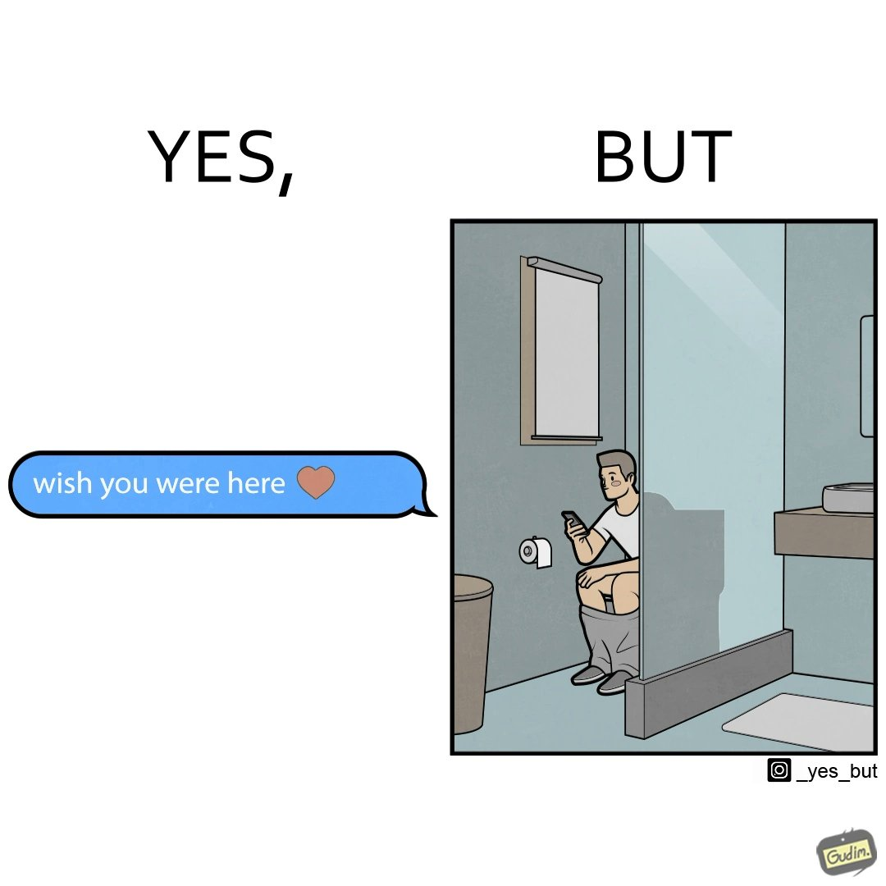
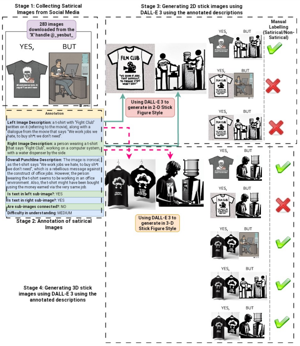
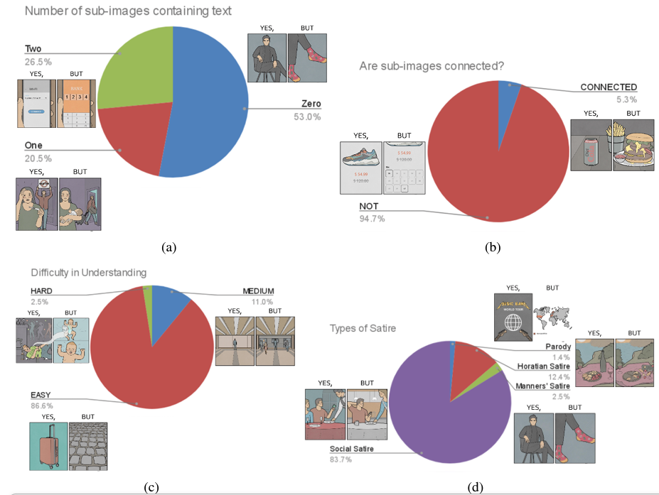
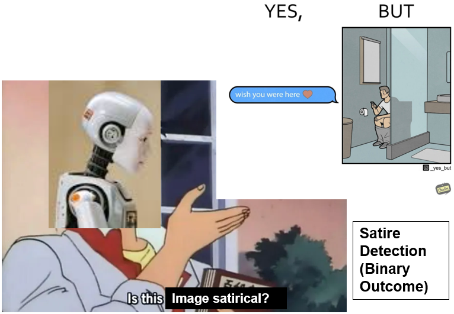
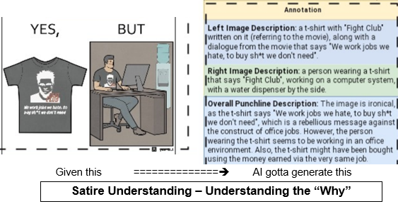
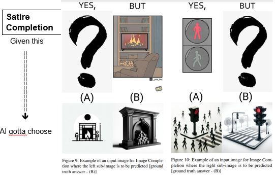
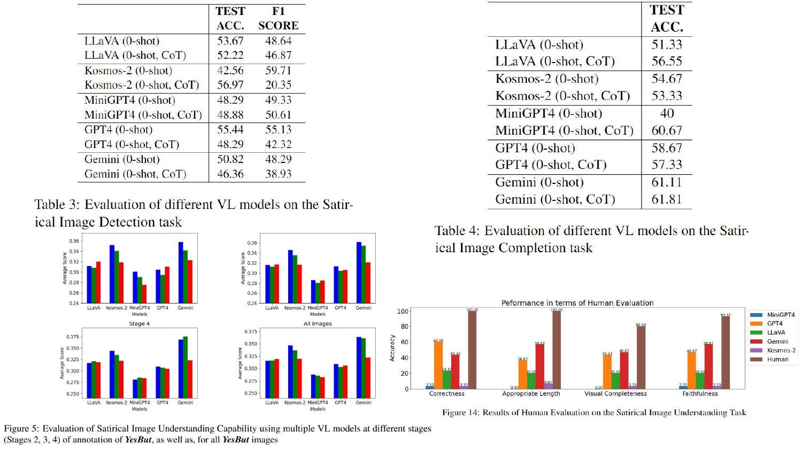

Understanding satire and humor is a challenging task for even current Vision-Language models. In this paper, we propose the challenging tasks of Satirical Image Detection (detecting whether an image is satirical), Understanding (generating the reason behind the image being satirical), and Completion (given one half of the image, selecting the other half from 2 given options, such that the complete image is satirical) and release a high-quality dataset YesBut, consisting of 2547 images, 1084 satirical and 1463 non-satirical, containing different artistic styles, to evaluate those tasks. Each satirical image in the dataset depicts a normal scenario, along with a conflicting scenario which is funny or ironic. Despite the success of current Vision-Language Models on multimodal tasks such as Visual QA and Image Captioning, our benchmarking experiments show that such models perform poorly on the proposed tasks on the YesBut Dataset in Zero-Shot Settings w.r.t both automated as well as human evaluation. Additionally, we release a dataset of 119 real, satirical photographs for further research.
This Figure shows an example image conveying satire. The irony in the image is that the person is messaging someone a very heartfelt message on the mobile, while sitting on a toilet seat!

Our annotation Pipeline for YesBut in 4 Stages- (1) Collecting Satirical Images from Social Media (2) Human Annotation of satirical images (3) Generating 2D stick images using DALL-E 3 and annotated descriptions (4) Generating 3D stick images using DALL-E 3 and annotated descriptions

Distribution of the original 283 satirical images downloaded from Social Media based on different aspects of image content and annotated descriptions

This is a binary classification task, where given an image, the model needs to predict whether the image is satirical or not.

Given a satirical image, we evaluate the model’s satire understanding capability in images by (1) prompting the model to generate a textual description of each subimage as input, using the prompt “Describe the image”. (2) prompting the model to generate the punchline in the image using the following prompt (referred to as “WHYFUNNY_PROMPT” hereafter)- “Why is this image funny/satirical?”.

Given either the left or right sub-image having the style of a colorized sketch, the other sub-image needs to be chosen from two options, one having a 2D, and the other having a 3D stick figure style, such that the entire image so formed is meaningful and satirical.


@inproceedings{nandy-etal-2024-yesbut,
title = "***{Y}es{B}ut***: A High-Quality Annotated Multimodal Dataset for evaluating Satire Comprehension capability of Vision-Language Models",
author = "Nandy, Abhilash and
Agarwal, Yash and
Patwa, Ashish and
Das, Millon Madhur and
Bansal, Aman and
Raj, Ankit and
Goyal, Pawan and
Ganguly, Niloy",
editor = "Al-Onaizan, Yaser and
Bansal, Mohit and
Chen, Yun-Nung",
booktitle = "Proceedings of the 2024 Conference on Empirical Methods in Natural Language Processing",
month = nov,
year = "2024",
address = "Miami, Florida, USA",
publisher = "Association for Computational Linguistics",
url = "https://aclanthology.org/2024.emnlp-main.937/",
doi = "10.18653/v1/2024.emnlp-main.937",
pages = "16878--16895",
abstract = "Understanding satire and humor is a challenging task for even current Vision-Language models. In this paper, we propose the challenging tasks of Satirical Image Detection (detecting whether an image is satirical), Understanding (generating the reason behind the image being satirical), and Completion (given one half of the image, selecting the other half from 2 given options, such that the complete image is satirical) and release a high-quality dataset ***YesBut***, consisting of 2547 images, 1084 satirical and 1463 non-satirical, containing different artistic styles, to evaluate those tasks. Each satirical image in the dataset depicts a normal scenario, along with a conflicting scenario which is funny or ironic. Despite the success of current Vision-Language Models on multimodal tasks such as Visual QA and Image Captioning, our benchmarking experiments show that such models perform poorly on the proposed tasks on the ***YesBut*** Dataset in Zero-Shot Settings w.r.t both automated as well as human evaluation. Additionally, we release a dataset of 119 real, satirical photographs for further research."
}